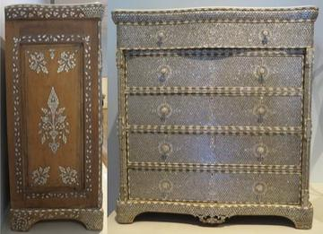
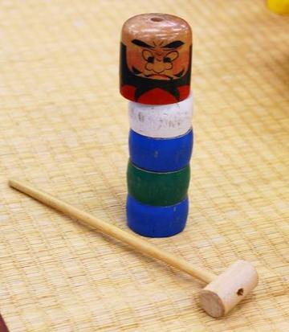
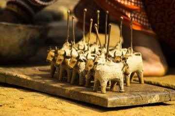
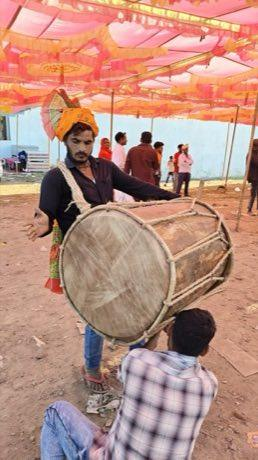
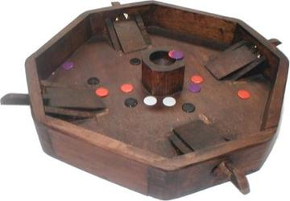
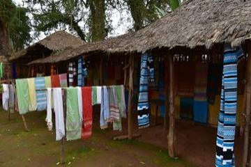

Dabke line dance
Lebanon · DancesDabuda
Ethiopia +1 · Board and table games
Dahomey Appliqué Panel Studio
Benin · Crafts and making
Dakar Car Rapide Livery Painter
Senegal · Crafts and making
Dala Horse Painting
Sweden · Crafts and making
Daldøs
Denmark +1 · Board and table games
Dalgona
South Korea · Dexterity and skill games
Damascus Mother-of-Pearl Inlay
Syria · Crafts and making
Dambe
Nigeria +1 · Street and playground games
Dan bau
Vietnam · Musical instrumentsDandi Biyo
Nepal · Dexterity and skill gamesDanish pin billiards
Denmark · Street and playground games
Dara
Nigeria +1 · Crafts and makingDart/spear throwing
Samoa · Street and playground games
Daruma Otoshi
Japan · Puzzles and mind gamesDego
Bhutan · Dexterity and skill games
Dhaka rickshaw art
Bangladesh · Crafts and making
Dhaka weave pattern loom
Nepal · Crafts and makingDhamet
Mauritania · Board and table games
Dhokra lost-wax casting
Bangladesh · Crafts and making
Dhol drum rhythm
India · Musical instrumentsDibeke
South Africa +1 · Street and playground games
Digor
Bhutan · Archery, throwing and target gamesDiketo
South Africa +2 · Dexterity and skill games
Dikir barat
Malaysia · Street and playground games
Dinka beaded corset beadwork
South Sudan · Crafts and making
Disc-flip
United Kingdom · Dexterity and skill games
Dizi
China · Musical instruments
Dogon Granary Builder
Mali · Crafts and making
Doko porter trail
Nepal · Dexterity and skill games
Dombra
Kazakhstan · Musical instrumentsDominoes
Dominican Republic +5 · Board and table gamesDon't Get Angry
Germany · Board and table gamesDon't Get Mad
Albania · Board and table games
Dorze cotton weaving
Ethiopia · Crafts and making
Dots and Boxes
France · Crafts and making
Double Dutch
United States · Street and playground games
Dougong Bracket Stacking
China +2 · Puzzles and mind games
Dranyen
China · Musical instrumentsDraughts
Barbados +5 · Board and table games
Dry Stone Wall Builder
Croatia +4 · Crafts and makingDudo / Cacho
Peru · Board and table games
Dumpling Pleating
China +2 · Crafts and makingDuo
Cote d'Ivoire · Board and table gamesDurak
Kazakhstan +5 · Card gamesDutch draughts
Netherlands · Board and table gamesDuulu
Uganda · Dexterity and skill games